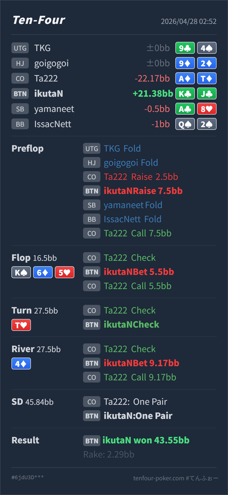

Preflop
やや攻撃的K♣J♣ は continue は明確ですが、3bet value の中心ではなく、call に残して range を守りやすい hand です。
主論点は、CO 2.5BB open に対して BTN K♣J♣ で 7.5BB 3bet し、flop K♠ 6♦ 5♥ で small c-bet、turn T♥ check back、river 4♦ で small value bet した判断です。結論は、postflop はかなり良いです。見直すなら preflop で、BTN の KJs は CO open に対して defend は明確ですが、GTO基準では call に残しやすい hand です。3bet は相手が overfold する、または call 後に postflop で利益を出せるなら使える、という位置づけです。
K♣J♣A♦T♦K♠ 6♦ 5♥ / T♥ / 4♦K♣J♣ は BTN vs CO open で続行する hand ですが、標準は call 寄りです。今回の 3bet は攻撃的寄せで、明確な大ミスではありません。K♠ 6♦ 5♥ は BTN 3bet 側に AA/AK/KQ と overpair があり、レンジ優位を取りやすい board です。KJ top pair は small c-bet で value/protection を取れます。T♥ は CO の TT/KT/ATs/QJs などにも関係し、Hero の KJ は3 streets 大きく取り切るほど強くありません。check back は自然です。4♦ で CO が3回目の check をしたあと、Hero の KJ は小さく value bet できます。Tx、弱い Kx、一部 pocket から call をもらう狙いで、9.17BB は良い thin value size です。K♣J♣A♦T♦2.5BB, BTN raise 7.5BB, SB fold, BB fold, CO callK♠ 6♦ 5♥ / T♥ / 4♦5.5BB, CO call9.17BB, CO callK, Villain one pair T
やや攻撃的K♣J♣ は continue は明確ですが、3bet value の中心ではなく、call に残して range を守りやすい hand です。
K♠ 6♦ 5♥良い
Hero は top pair good kicker で、value/protection の中心寄りです。
T♥良い
Hero は top pair のままですが、3 streets 大きく value を取るほど強くはありません。
4♦とても良い
Hero の KJ は thin value hand です。大きく打つと worse が降りやすく、小さく打つと Tx から call を取りやすいです。
| 論点 | その場で起きがちな見え方 | どこがズレやすいか | 次回の基準 |
|---|---|---|---|
KJs の BTN 3bet | suited broadway で強いので 3bet value に見える | KJs は playability が高く、BTN で position もあるため、3bet に回すより call bucket を守る役割を持ちやすいです。3bet すると、call されたときに AK/KQ/AQ/JJ-TT など強い range と戦いやすくなります。 | CO open に対する BTN KJs は default call、相手が降りすぎるなら 3bet を混ぜる |
| river の thin value | top pair なので大きく取れそうに見える | turn check back 後の river では value はありますが、相手の call range は Tx や弱い bluff-catcher が中心です。大きくすると悪い hand を落とし、強い Kx や slowplay に寄りやすくなります。 | turn check back 後の top pair は、小さめ value で worse pair を呼ぶ |
| ストリート | その時点の見え方 | 実ハンドの位置づけ | 評価 | その場の一手 |
|---|---|---|---|---|
| Preflop | CO open に対して BTN は position ありで広く続行できます。KJs は十分に強い suited broadway です。 | K♣J♣ は continue は明確ですが、3bet value の中心ではなく、call に残して range を守りやすい hand です。 | やや攻撃的 | default は call 寄りです。相手が 3bet に降りすぎる、または postflop で受けすぎるなら 3bet は有力です。 |
Flop K♠ 6♦ 5♥ | BTN 3bet 側は overpair と強い Kx を多く持ち、CO は pocket、broadway、suited ace、set を持ちます。全体の主導権は BTN 側です。 | Hero は top pair good kicker で、value/protection の中心寄りです。 | 良い | 5.5BB の small c-bet は自然です。worse pair、pocket、A-high backdoor を広く続行させられます。 |
Turn T♥ | CO call range に TT/KT/ATs/QJs/JTs が残り、T は相手側にもかなり関係します。Hero 側も強い hand はありますが、KJ はやや中間化します。 | Hero は top pair のままですが、3 streets 大きく value を取るほど強くはありません。 | 良い | check back で pot control し、river の call / value bet を見ます。 |
River 4♦ | CO が3回目の check をしたことで、強い made hand はやや減ります。Tx、中位 pocket、弱い Kx、一部 missed broadway が残ります。 | Hero の KJ は thin value hand です。大きく打つと worse が降りやすく、小さく打つと Tx から call を取りやすいです。 | とても良い | 9.17BB の小さめ bet は良いです。turn check back 後の top pair として、worse pair を呼ぶ size になっています。 |
KJs は CO open に対して強い defend hand ですが、標準は call に残しやすいです。3bet は相手依存の攻撃的寄せとして使います。A♦T♦ で flop call、turn check、river T pair で call しています。この pool が second pair を river small bet に call してくれるなら、今回の thin value はかなり利益的です。Tx をすぐ fold するなら、river は check back 寄りになります。逆に今回のように call が広いなら、turn check back から river small value を増やしてよいです。